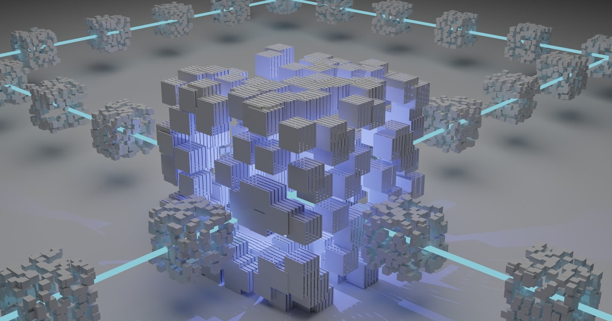

Timnas Indonesia 2026: 7 Fakta Mengejutkan Jalan ke Piala Dunia
Perjalanan Timnas Indonesia menuju Piala Dunia 2026 penuh kejutan. Ini 7 fakta krusial tentang skuad Shin Tae-yong yang bikin Asia kagum.

Liga 1 Indonesia 2026: 7 Fakta Krusial yang Mengubah Wajah Kompetisi
Liga 1 2026 berubah drastis: VAR penuh, format baru, dan transfer raksasa. Ini 7 fakta krusial yang bikin kompetisi domestik Indonesia naik kelas.

Transfer Musim Dingin 2026: 7 Deal Mengejutkan yang Bikin Heboh Eropa
Bursa transfer Januari 2026 pecah rekor: 7 deal yang bikin dunia sepakbola terguncang. Siapa menang, siapa kalah, dan apa dampaknya ke bursa musim panas?

Gegenpressing 2026: 5 Evolusi Taktik yang Mengubah Sepakbola Modern
Gegenpressing bukan lagi identik dengan Klopp. Ini 5 evolusi taktik high-press 2026 yang mengubah cara klub Eropa bermain.

Messi vs Ronaldo 2026: 6 Data Mengejutkan yang Menutup Debat GOAT
Debat Messi vs Ronaldo masih hangat di 2026. Ini 6 data statistik dan warisan yang memberi gambaran paling jernih soal siapa GOAT sebenarnya.

VAR 2026: 6 Perubahan Teknologi yang Mengubah Keputusan Wasit
VAR 2026 tidak lagi sama. Ini 6 perubahan teknologi—dari semi-automated offside hingga AI handball—yang mengubah cara wasit mengambil keputusan.

ASEAN Championship 2026: 6 Fakta yang Mengubah Sepakbola Asia Tenggara
ASEAN Championship 2026 jadi titik balik sepakbola regional. Ini 6 fakta krusial dari rivalitas Indonesia-Vietnam hingga level teknis yang naik drastis.

El Clasico 2026: 6 Alasan Rivalitas Ini Masih Jadi Laga Paling Ditunggu
El Clasico 2026 kembali panas. Ini 6 alasan mengapa rivalitas Barcelona vs Real Madrid tetap jadi laga paling ditunggu di sepakbola dunia.

Gaji Pemain Timnas Indonesia 2026: 6 Fakta yang Jarang Dibahas Media
Berapa gaji pemain Timnas Indonesia 2026? Ini 6 fakta struktur pendapatan pemain—dari bonus PSSI, sponsor pribadi, hingga gap diaspora vs lokal.

Reformasi PSSI 2026: 6 Perubahan Nyata di Era Erick Thohir
Reformasi PSSI di era Erick Thohir membawa 6 perubahan nyata yang mengubah wajah sepakbola Indonesia. Ini analisis hasil dan tantangan yang tersisa.

Cara Kerja AI Agent 2026: Dari Chatbot Jadi Rekan Kerja
AI Agent 2026 bukan sekadar chatbot. Pelajari cara kerjanya, perbedaan dengan LLM biasa, dan dampaknya bagi pekerjaan di Indonesia.

Kenapa Deep Work 4 Jam Lebih Produktif daripada 12 Jam Multitasking
Penelitian menunjukkan 4 jam deep work menghasilkan lebih banyak dibanding 12 jam multitasking. Pelajari ilmu di baliknya dan cara menerapkannya hari ini.

Indonesia 2045: 3 Skenario Ekonomi yang Jarang Dibahas Media
Narasi Indonesia Emas 2045 populer, tapi ada tiga skenario lain yang jarang dibahas. Simak analisis realistis tentang jalur ekonomi yang mungkin.

7 Cara Cerdas Mengatur Keuangan Gen Z di Tengah Inflasi 2026
Inflasi 2026 menggerus daya beli Gen Z. Ini 7 strategi finansial cerdas yang sudah diuji untuk bertahan, menabung, dan tetap investasi di tengah harga yang melonjak.

Mengapa 90% Mahasiswa Indonesia Gagal Menabung? Ini 5 Penyebab Utamanya
Riset OJK 2026 mengungkap fakta mengejutkan: 9 dari 10 mahasiswa Indonesia tidak punya tabungan. Inilah 5 penyebab utama dan solusi praktisnya.

DeepSeek vs ChatGPT 2026: Siapa Pemenang Sebenarnya AI Race Tahun Ini?
DeepSeek dari China mengguncang dominasi ChatGPT dengan model open source yang lebih murah. Analisis lengkap perbandingan performa, harga, dan dampak global di 2026.

5 Skill Wajib Bertahan di Era AI: Yang Tidak Diajarkan di Sekolah
AI menggantikan pekerjaan rutin dengan kecepatan tinggi. Ini 5 skill esensial yang harus dimiliki untuk tetap relevan di pasar kerja 2026 dan seterusnya.

Ekonomi Indonesia 2026: 8 Sektor yang Tumbuh Pesat & 3 yang Runtuh
Analisis mendalam ekonomi Indonesia 2026: sektor mana yang menunjukkan pertumbuhan eksplosif dan mana yang menghadapi krisis. Data terkini BPS, BI, dan Kementerian Keuangan.

Active Recall: 5 Teknik Belajar Cepat Terbukti Ubah Cara Otak Ingat
Active recall adalah teknik belajar paling efektif menurut sains kognitif. Inilah panduan lengkap implementasi, didukung penelitian neuroscience terkini.

Krisis Iklim Indonesia 2026: 6 Provinsi Paling Terancam dan Apa yang Bisa Dilakukan
Perubahan iklim mengancam Indonesia secara nyata di 2026. Inilah 6 provinsi paling terdampak menurut BMKG dan langkah konkret menghadapinya.

Sejarah Tersembunyi: 7 Penemuan Nusantara yang Mendahului Peradaban Dunia
Nusantara bukan hanya konsumen budaya asing. Inilah 7 penemuan dan inovasi besar bangsa Nusantara yang mendahului peradaban dunia, dari pelayaran hingga teknik pertanian.

Teknik Quantum Sensing: Revolusi Diam-diam yang Mengubah Industri 2026
Quantum sensing adalah aplikasi teknologi quantum yang sudah komersial di 2026. Inilah cara kerjanya, aplikasi industri, dan dampaknya bagi Indonesia.

Generasi Burnout: Mengapa 73% Gen Z Indonesia Stres Kronis di Usia 25?
Studi terbaru: 73% Gen Z Indonesia mengalami gejala burnout kronis sebelum usia 25. Inilah penyebab dan strategi pemulihan yang didukung sains.

Dampak Perang Iran-AS terhadap Ekonomi Indonesia: Avtur Naik 72%, Rupiah Melemah
Perang Iran-AS mengguncang ekonomi Indonesia: harga avtur melonjak 72%, rupiah sentuh Rp17.000/USD, dan arus modal keluar $0,41 miliar. Analisis dampak lengkap.

Tarif Trump 32% ke Indonesia: Ancaman Nyata Perang Dagang 2026
Trump kenakan tarif 32% ke Indonesia dalam perang dagang global. IMF turunkan proyeksi pertumbuhan dunia. Bagaimana dampaknya ke ekspor dan ekonomi RI?

Selat Hormuz 2026: 5 Fakta Mengejutkan Jalur Minyak Penentu Ekonomi Dunia
25% perdagangan minyak dunia lewat Selat Hormuz yang hanya selebar 33 km. Penutupan oleh Iran saat perang 2026 membuat harga minyak melonjak 27%.

Demo Besar 107 Kota di Indonesia 2026: Tuntutan Reformasi Upah dan Lapangan Kerja
Ratusan ribu rakyat turun ke jalan di 107 kota. Protes upah rendah, pengangguran, dan tunjangan kontroversial DPR/militer mengguncang Indonesia.

AI dalam Pendidikan Indonesia 2026: Revolusi atau Ancaman bagi Guru?
ChatGPT, Claude, Gemini masuk kelas. 47% mahasiswa pakai AI untuk tugas. UNESCO peringatkan bias. Apakah guru akan digantikan?

Quantum Computing 2026: Revolusi Teknologi yang Akan Mengubah Segalanya
IBM Condor, Google Willow, qubit vs bit. Quantum computing ancam enkripsi dunia dan bisa revolusi farmasi. Indonesia belum punya roadmap.

Indonesia Kirim Pasukan ke Gaza 2026: Ujian Besar Politik Luar Negeri Bebas Aktif
Rencana Indonesia kirim pasukan perdamaian ke Gaza jadi ujian doktrin bebas aktif. Sejarah TNI di misi PBB dan implikasi diplomatik dengan AS-Israel.

Love Scam Indonesia-China 2026: Modus Baru Penipuan Online yang Meresahkan
25.000+ laporan love scam, kerugian Rp 4,7 triliun, WNI dipaksa kerja di scam center. Krisis kepercayaan bilateral Indonesia-China memburuk.

Sejarah Perang Teluk: Dari Invasi Kuwait 1990 hingga Konflik Iran 2026
Dari Desert Storm 1991 ke Operation Epic Fury 2026. Tiga dekade perang di Teluk Persia dan pola yang terus berulang. Pelajaran sejarah yang diabaikan.

Krisis Energi Indonesia 2026: Ketika Perang Iran Mengguncang Pasokan Minyak Nasional
Indonesia konsumsi 1,7 juta barel/hari tapi produksi hanya 860 ribu. Perang Iran bikin avtur +72%, gas +74%. Saatnya diversifikasi energi.

Gencatan Senjata Iran-Amerika 2026: Trump Beri Waktu 2 Minggu, Iran Ajukan 10 Syarat
Gencatan senjata 14 hari disepakati 8 April 2026 setelah ultimatum Trump. Dimediasi Pakistan, Iran ajukan 10 syarat termasuk buka Selat Hormuz dan pencabutan sanksi. Negosiasi lanjutan di Islamabad.

Krisis Kesehatan Mental Mahasiswa Indonesia 2026: Fakta yang Diabaikan
1 dari 4 mahasiswa Indonesia mengalami depresi. Data mengejutkan tentang krisis kesehatan mental di kampus dan mengapa sistem konseling gagal menangani.

Deepfake 2026: 5 Bahaya Nyata bagi Demokrasi Indonesia
Teknologi deepfake semakin canggih dan murah. Bagaimana AI-generated content mengancam integritas pemilu dan demokrasi Indonesia?

Kecanduan Short Video: Bagaimana TikTok Mengubah Otak Generasi Muda
Rata-rata Gen Z scroll 3 jam/hari. Neuroscience di balik kecanduan short video, dampak pada attention span, dan cara melawan dopamine loop.

Konflik Palestina 2026: Kronologi, Dampak Global, dan Posisi Indonesia
Krisis kemanusiaan berlanjut. Analisis lengkap kronologi konflik, dampak geopolitik global, dan peran Indonesia di panggung internasional.

Tarumanegara: 7 Fakta Kerajaan Hindu Tertua yang Terlupakan Sejarah
Prasasti Purnawarman berusia 1.600 tahun menyimpan jejak kerajaan Hindu pertama di Jawa Barat. Sejarah yang jarang diajarkan di sekolah.

Revolusi Kendaraan Listrik Indonesia 2026: Dari Wacana ke Kenyataan
Penjualan EV naik 340% dalam 2 tahun. Data lengkap adopsi kendaraan listrik, infrastruktur charging, dan keunggulan nikel Indonesia.

Mitos 5 AM Club: Apakah Bangun Pagi Benar-benar Bikin Sukses?
Science says: kronotipe menentukan produktivitasmu, bukan jam alarm. Riset terbaru membongkar mitos bangun subuh dan apa yang sebenarnya bekerja.

Perang Chip 2026: Mengapa Semikonduktor Tentukan Nasib Negara
TSMC menguasai 54% pasar chip global. Perang semikonduktor AS-China mengubah tatanan geopolitik dunia dan membuka peluang bagi Indonesia.

Shrinkflation: Inflasi Tersembunyi yang Diam-diam Menggerus Dompetmu
Harga tetap tapi isi berkurang. 73% produk FMCG Indonesia mengalami shrinkflation. Cara mendeteksi dan melindungi dompetmu.

Bushido 2026: 7 Kode Etik Samurai yang Masih Relevan Hari Ini
7 kebajikan samurai yang membentuk budaya Jepang modern. Filosofi Bushido dan relevansinya dengan nilai-nilai kehidupan masa kini.

Gaji Gen Z Indonesia vs Biaya Hidup 2026: Data yang Mengejutkan
UMR rata-rata Rp 5 juta vs biaya hidup Rp 7 juta. Data perbandingan gaji Gen Z di berbagai kota besar Indonesia dan realita biaya hidup yang mencekik.

Bahaya Ultraprocessed Food yang Kamu Konsumsi Setiap Hari
68% makanan yang dikonsumsi anak muda Indonesia adalah ultraprocessed food. Studi terbaru mengungkap dampak mengerikan bagi kesehatan jangka panjang.

Mengapa Indonesia Masih Miskin Padahal Kaya Sumber Daya Alam?
Indonesia punya emas, nikel, kelapa sawit, tapi GDP per kapita masih kalah dari Malaysia dan Thailand. Analisis paradoks kutukan sumber daya alam.

15 Pekerjaan yang Terancam Digantikan AI di 2026
McKinsey: 12 juta pekerjaan Indonesia berisiko terotomasi. Daftar lengkap profesi yang terancam dan skill yang harus kamu kuasai untuk bertahan.

Rahasia Orang Jepang Hidup Lebih Lama: Filosofi Ikigai
Okinawa punya 68 centenarian per 100.000 penduduk. Pelajari rahasia panjang umur dan kebahagiaan dari filosofi Ikigai yang bisa kamu terapkan hari ini.

Skandal Judi Online Indonesia 2026: Triliunan Rupiah yang Hilang
Rp 600 triliun hilang ke judi online setiap tahun. Data mengejutkan tentang korban, modus operandi, dan mengapa pemerintah kewalahan memberantas.

Kenapa Anak Muda Indonesia Malas Membaca? Data dan Faktanya
Indonesia peringkat 62 dari 70 negara dalam literasi. Rata-rata hanya baca 3-4 halaman per hari. Apa penyebabnya dan bagaimana solusinya?

China vs Amerika: Siapa Menang Perang Teknologi 2026?
Chip wars, AI race, dominasi 5G. Analisis data lengkap persaingan teknologi dua superpower dan dampaknya bagi Indonesia.

Quiet Quitting 2026: 7 Alasan Gen Z Nekat Tinggalkan Hustle Culture
67% Gen Z Indonesia mengalami burnout. Quiet quitting bukan malas, tapi perlawanan terhadap budaya kerja toxic. Data dan analisis tren ini.

7 Misteri Peradaban Nusantara yang Dihapus dari Buku Sejarah
Gunung Padang berusia 25.000 tahun? Borobudur dibangun sebelum piramida? Fakta-fakta mengejutkan peradaban Nusantara yang jarang diajarkan di sekolah.

Krisis Air Bersih Global 2026: Ketika Emas Biru Menjadi Sumber Konflik Baru
2,3 miliar orang kekurangan air bersih. Analisis data krisis air global, wilayah terdampak, dan potensi konflik geopolitik akibat kelangkaan sumber daya air.

Ekonomi Kreator Indonesia 2026: Industri Rp 200 Triliun yang Mengubah Wajah Ekonomi Digital
17 juta kreator aktif, industri senilai Rp 200 triliun. Data lengkap platform terbesar, distribusi pendapatan, dan peluang karier di ekonomi kreator Indonesia.

Fenomena Brain Drain Indonesia: Mengapa Talenta Terbaik Kita Memilih Berkarier di Luar Negeri?
350 ribu profesional Indonesia di luar negeri dengan gap gaji hingga 5x lipat. Analisis push-pull factor brain drain dan dampaknya bagi pembangunan nasional.

SMR 2026: Revolusi Reaktor Nuklir Mini yang Lebih Aman & Murah
80+ desain SMR di seluruh dunia menjanjikan energi nuklir yang lebih aman, murah, dan modular. Bagaimana potensinya untuk Indonesia?

Stoikisme Gen Z: 5 Filosofi Kuno Ampuh Lawan Stres Digital 2026
Pencarian 'stoicism' naik 340% di kalangan Gen Z. Mengapa filosofi Marcus Aurelius kembali relevan di era kecemasan digital?

Rempah Nusantara: Bagaimana Pala & Cengkeh Mengubah Peta Dunia
Pala dan cengkeh Maluku pernah lebih mahal dari emas. Kisah bagaimana rempah Nusantara mengubah geopolitik dunia dan memicu era kolonialisme.

Krisis Perumahan Gen Z 2026: Mengapa Generasi Ini Mungkin Tidak Akan Pernah Punya Rumah
Rasio harga rumah vs pendapatan di Jakarta mencapai 18x. 72% Gen Z belum mampu beli rumah. Analisis data dan solusi krisis perumahan Indonesia.

Cybersecurity Indonesia 2026: 120 Juta Serangan Siber dan Krisis Tenaga Ahli
120 juta serangan siber per tahun, 45 ribu lowongan ahli siber kosong. Analisis lanskap keamanan siber Indonesia dan strategi pertahanan digital.

Metode Feynman: 5 Langkah Cerdas Belajar ala Genius
Teknik belajar Richard Feynman terbukti meningkatkan retensi hingga 90%. Pelajari 4 langkah sederhana yang mengubah cara Anda memahami konsep apapun.

Sriwijaya: Imperium Maritim Terkuat yang Menguasai Asia 700 Tahun
Selama 400 tahun Sriwijaya menguasai Selat Malaka dan menjadi pusat perdagangan maritim terbesar di Asia Tenggara. Kisah kejayaan dan keruntuhannya.

Perang Dagang AS-China 2026: Tarif 145% dan Dampaknya bagi Ekonomi Indonesia
Tarif 145% Trump terhadap China memicu perang dagang baru. Analisis dampaknya terhadap ekspor Indonesia, tekanan rupiah, dan peluang sebagai alternatif manufaktur.

AI Generatif 2026: Revolusi yang Mengancam dan Menciptakan Jutaan Pekerjaan Baru
GPT-5, Gemini Ultra, dan Claude mengubah lanskap pekerjaan global. Mana yang hilang, mana yang baru muncul, dan bagaimana Indonesia beradaptasi?

Evaluasi Kurikulum Merdeka 2026: Berhasil atau Gagal Tingkatkan Kualitas Siswa?
Dua tahun implementasi Kurikulum Merdeka — evaluasi P5, kesiapan guru, skor PISA, dan kesenjangan kualitas kota vs desa.

Dopamine Detox: 7 Cara Reset Otak dari Kecanduan Scrolling 2026
Rata-rata pemuda Indonesia scrolling 8 jam/hari. Pelajari sains di balik kecanduan dopamin dan protokol detox 3 level yang terbukti efektif.

IKN Nusantara 2026: Mega Proyek Rp 466 Triliun yang Belum Selesai — Apa Kendalanya?
Progress IKN baru 42%, anggaran terserap 32.7%. Analisis kendala teknis, tantangan engineering, dan perbandingan dengan ibu kota terencana lainnya.

Runtuhnya VOC: 5 Sebab Perusahaan Terkaya Sejarah Bangkrut
Dengan valuasi $7.9 triliun, VOC adalah perusahaan terkaya sepanjang sejarah. Bagaimana korupsi sistematis menghancurkan raksasa dagang ini?

Starlink Masuk Indonesia 2026: Revolusi Internet Pelosok atau Ancaman bagi Telkom?
Starlink resmi beroperasi di Indonesia. Analisis dampaknya terhadap daerah 3T, persaingan dengan ISP lokal, dan regulasi Kominfo.

Krisis Taiwan: Skenario yang Bisa Mengubah Tatanan Dunia
Analisis mendalam tentang krisis Selat Taiwan, ketegangan AS-China, ketergantungan semikonduktor TSMC, dan dampaknya terhadap ASEAN serta ekonomi global.

Journaling: Senjata Rahasia Orang-Orang Sukses
Journaling bukan sekadar menulis diary. Ini adalah alat refleksi dan perencanaan yang digunakan oleh para pemimpin dunia.

Chip AI: Perang Semikonduktor yang Mengubah Geopolitik
Perang chip AI global antara NVIDIA, AMD, dan TSMC mengubah lanskap geopolitik dan menentukan masa depan teknologi dunia.

Second Brain: 5 Cara Cerdas Kelola Pengetahuan ala Profesional 2026
Metode Second Brain dari Tiago Forte — framework CODE, perbandingan Notion vs Obsidian, dan panduan implementasi 4 minggu.

Indonesia Resmi Bergabung BRICS 2026: Apa Dampaknya bagi Rakyat dan Ekonomi?
Indonesia resmi jadi anggota BRICS. Apa manfaat nyatanya bagi rakyat — dari harga barang, lapangan kerja, hingga beasiswa?

ASEAN 2026: 7 Strategi Bertahan di Tengah Rivalitas Global
Bagaimana ASEAN mempertahankan netralitas dan relevansinya di tengah persaingan kekuatan besar AS-China di kawasan Indo-Pasifik.

Jalur Sutra: Jaringan Perdagangan yang Mengubah Peradaban
Menelusuri sejarah Jalur Sutra kuno, rute perdagangan yang menghubungkan Timur dan Barat serta membentuk peradaban dunia.

Homeschooling 2026: 5 Alasan Jadi Pilihan Wajib Orang Tua Indonesia
Homeschooling semakin diminati di Indonesia. Apakah ini alternatif yang valid atau justru kebutuhan mendesak di era modern?

Kereta Cepat Jakarta-Surabaya 2026: Lanjutan Whoosh atau Proyek Baru?
Rencana perpanjangan KCJB ke Surabaya senilai Rp 500+ triliun. Analisis rute, teknologi Shinkansen vs China CR, dan tantangan engineering.

7 Teknik Manajemen Waktu Ampuh yang Bikin Hidup 2x Lebih Produktif
Strategi manajemen waktu yang terbukti efektif untuk meningkatkan produktivitas dan keseimbangan hidup.

Blockchain 2026: 7 Revolusi Mengejutkan di Luar Kripto yang Wajib Diketahui
Teknologi blockchain jauh melampaui kripto. Dari rantai pasok hingga rekam medis, blockchain mengubah cara industri beroperasi.

Rahasia Majapahit: 7 Fakta Imperium Nusantara Penguasa Asia Tenggara
Menelusuri kejayaan Kerajaan Majapahit sebagai kekuatan maritim terbesar di Asia Tenggara pada abad ke-14.

Rekayasa Jembatan: Dari Bambu hingga Megastruktur Modern
Menelusuri evolusi teknik pembangunan jembatan dari konstruksi tradisional hingga megastruktur modern yang menghubungkan pulau.

7 Alasan Pendidikan Karakter Wajib Jadi Prioritas di Era Modern
Mengapa pendidikan karakter menjadi fondasi utama dalam membentuk generasi muda yang bermoral dan bertanggung jawab di tengah arus globalisasi.

Geopolitik Energi 2026: 6 Negara Penguasa yang Bikin Dunia Bertekuk Lutut
Persaingan global untuk menguasai sumber daya energi dari minyak hingga litium membentuk ulang peta kekuatan dunia.

BRICS 2026: 5 Bukti Tatanan Ekonomi Baru Mengejutkan Dominasi Barat
Aliansi BRICS semakin menguat dengan ekspansi anggota baru. Apakah ini awal dari pergeseran kekuatan ekonomi global?
Teknologi Pendidikan 2026: 7 Transformasi Paling Berpengaruh
Bagaimana teknologi seperti e-learning, AI, dan kelas digital mengubah lanskap pendidikan di Indonesia menuju era baru pembelajaran.

Robotika Indonesia 2026: 6 Lompatan Mengejutkan dari Kompetisi ke Industri
Perkembangan robotika di Indonesia dari prestasi di kompetisi internasional hingga penerapan di dunia industri.

Growth Mindset: Mengubah Pola Pikir untuk Mencapai Potensi Maksimal
Konsep growth mindset dari Carol Dweck dan bagaimana menerapkannya untuk pertumbuhan pribadi dan profesional.

Kecerdasan Emosional: 5 Bukti EQ Lebih Krusial dari IQ di 2026
Kecerdasan emosional menentukan keberhasilan karir dan hubungan. Pelajari cara meningkatkan EQ untuk hidup yang lebih baik.

Perang Dunia II: 8 Dampak Krusial yang Masih Mengubah Dunia 2026
Perang Dunia II bukan hanya catatan sejarah — dampaknya terhadap geopolitik, ekonomi, dan tatanan dunia masih membentuk realitas hari ini.

Megaproyek Indonesia: IKN, Kereta Cepat, dan Visi 2045
Indonesia sedang membangun megaproyek ambisius dari IKN hingga kereta cepat. Analisis tantangan teknis dan visi besar di baliknya.

Konflik Laut China Selatan 2026: 7 Dampak Krusial bagi Indonesia
Sengketa teritorial di Laut China Selatan bukan hanya masalah negara klaim, tetapi juga mengancam kedaulatan dan ekonomi Indonesia.

10 Tips Belajar Efektif untuk Pelajar dan Mahasiswa
Teknik belajar yang terbukti secara ilmiah dapat meningkatkan pemahaman dan retensi materi, dari spaced repetition hingga metode Pomodoro.

Perang Dingin: 7 Fakta Rivalitas yang Bikin Dunia Modern Berubah Total
Perang Dingin antara AS dan Uni Soviet membentuk tatanan dunia modern, dari blok militer hingga perlombaan luar angkasa.

Atomic Habits 2026: 7 Cara Bikin Kebiasaan Kecil Mengubah Hidup
Pelajaran dari konsep atomic habits tentang bagaimana perubahan kecil 1% setiap hari dapat menghasilkan transformasi luar biasa.

Gap Year 2026: 5 Manfaat Krusial Sebelum Masuk Perguruan Tinggi
Gap year bisa menjadi momen transformatif jika direncanakan dengan baik. Pelajari manfaat dan strategi gap year yang efektif.

Energi Terbarukan: Tantangan Rekayasa Masa Depan
Tantangan teknis dan rekayasa dalam mengembangkan energi terbarukan sebagai sumber energi utama Indonesia.

Kurikulum Merdeka 2026: 8 Fakta Krusial Wajib Diketahui Orang Tua
Panduan komprehensif tentang Kurikulum Merdeka, mulai dari tujuan, struktur, hingga implementasi Projek Penguatan Profil Pelajar Pancasila (P5).

Reformasi 1998: Titik Balik Demokrasi Indonesia
Gerakan reformasi 1998 mengakhiri era Orde Baru dan membuka jalan bagi demokrasi Indonesia modern.

Digital Detox 2026: 5 Cara Ampuh Rebut Kembali Fokus di Era Distraksi
Ketergantungan digital menggerus produktivitas dan kesehatan mental. Pelajari strategi digital detox yang realistis dan efektif.

Proliferasi Nuklir di Abad 21: Ancaman yang Tak Pernah Padam
Perlombaan senjata nuklir kembali memanas. Dari Korea Utara hingga Iran, ancaman proliferasi nuklir terus membayangi dunia.

Komputasi Kuantum 2026: 5 Bukti Mengejutkan Masa Depan Sudah Dekat
Komputasi kuantum bukan lagi fiksi ilmiah. Dari Google hingga IBM, perusahaan teknologi berlomba menguasai supremasi kuantum.

Bioteknologi: Rekayasa Kehidupan di Abad 21
Bioteknologi mengubah cara kita memproduksi makanan, mengobati penyakit, dan bahkan memodifikasi gen. Sejauh mana batasnya?
Literasi Digital: Keterampilan Wajib Abad 21
Keterampilan literasi digital yang harus dimiliki setiap pelajar di era informasi, mulai dari evaluasi sumber hingga etika digital.

Sumpah Pemuda 1928: Tonggak Persatuan yang Melahirkan Bangsa
Peristiwa Sumpah Pemuda 1928 menjadi momen historis yang menyatukan pemuda dari berbagai daerah untuk satu bangsa Indonesia.
Kesehatan Mental Pelajar 2026: 7 Alasan Wajib Jadi Prioritas Sekolah
Tekanan akademik dan sosial dapat berdampak serius pada kesehatan mental pelajar. Kenali tanda-tandanya dan cara mengatasinya.

5 Cara Pembelajaran Berbasis Proyek Bikin Siswa Belajar Sambil Berkarya
Project-Based Learning (PjBL) menjadikan siswa sebagai pelaku aktif yang memecahkan masalah nyata melalui proyek kolaboratif.

5 Cara Cerdas Orang Tua Mendukung Pendidikan Anak di Era Digital
Keterlibatan orang tua bukan sekadar membantu PR, melainkan membangun fondasi motivasi dan kebiasaan belajar positif.

5 Alasan Pendidikan Inklusif Wajib Diterapkan di Sekolah 2026
Setiap anak berhak mendapatkan pendidikan berkualitas tanpa diskriminasi. Bagaimana Indonesia mewujudkan pendidikan inklusif?
AI dalam Pendidikan 2026: 7 Peluang dan Bahaya Tersembunyi
Kecerdasan buatan membawa revolusi dalam cara kita belajar dan mengajar. Namun apakah Indonesia siap mengadopsinya secara luas?

Membaca Kritis 2026: 7 Cara Ampuh Bongkar Hoaks dan Berpikir Jernih
Di era informasi berlebih, kemampuan membaca kritis menjadi senjata utama melawan hoaks dan misinformasi.

Pendidikan Finansial Pelajar 2026: 7 Skill Wajib Dikuasai Sejak Dini
Mengelola uang bukan hanya urusan orang dewasa. Literasi finansial sejak dini membentuk generasi yang bijak secara ekonomi.

5 Cara Merancang Lingkungan Belajar Ideal yang Terbukti Efektif
Lingkungan belajar yang tepat dapat meningkatkan fokus dan produktivitas hingga 50%. Simak cara mendesain ruang belajar optimal.

Public Speaking: Keterampilan yang Wajib Dimiliki Pelajar
Kemampuan berbicara di depan umum bukan bakat bawaan. Ini adalah skill yang bisa dilatih dan dikuasai oleh siapa saja.

Pendidikan STEM 2026: 6 Cara Ampuh Cetak Generasi Inovator Indonesia
Science, Technology, Engineering, Mathematics — empat pilar yang menjadi kunci daya saing bangsa di era revolusi industri 4.0.